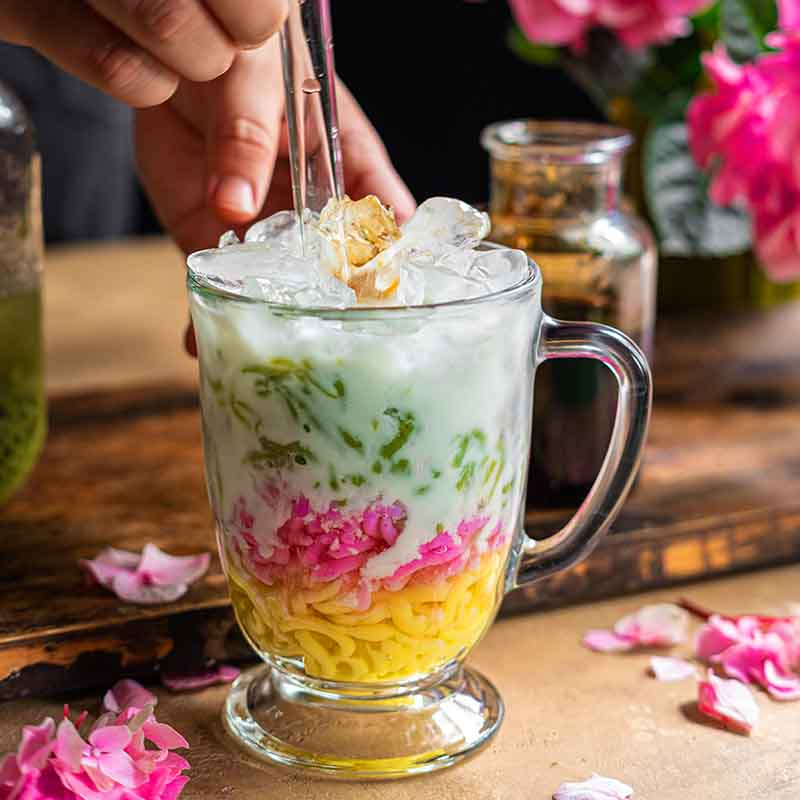
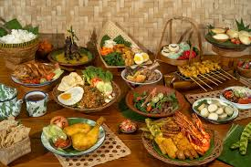

La gastronomía indonesia es una de las más ricas y variadas del sudeste asiático. Está profundamente influenciada por su historia, su diversidad cultural y su geografía compuesta por miles de islas. En cada región se encuentran sabores únicos, pero todos comparten una característica: el equilibrio entre lo dulce, lo salado, lo picante y lo aromático.

El arroz es el alimento básico por excelencia. Se sirve en casi todas las comidas y se considera símbolo de prosperidad. Junto con el arroz, las especias, la leche de coco y los ingredientes frescos como el jengibre, la lima, la cúrcuma o el ajo son esenciales en la cocina indonesia. En los mercados tradicionales, los colores y aromas de los ingredientes crean una experiencia sensorial que refleja la esencia del país.

Uno de los platos más representativos es el Nasi Goreng, considerado el plato nacional. Es un arroz frito al estilo indonesio, cocinado con salsa de soja dulce, verduras, huevo y, a menudo, pollo o gambas. Se acompaña con pepino, tomate y el tradicional “krupuk”, una galleta crujiente de gambas. Cada familia tiene su propia receta, lo que hace que nunca sepa igual en dos lugares distintos.

El Sate, también conocido como “Satay”, es otro icono de la gastronomía indonesia. Son brochetas de carne (pollo, ternera o cerdo) asadas a la parrilla y servidas con salsa de cacahuete. Se pueden encontrar tanto en restaurantes como en puestos callejeros, y representan la esencia de la comida rápida indonesia: sencilla, sabrosa y llena de aroma.

El Rendang es un guiso originario de la región de Sumatra Occidental. Se prepara con carne de ternera cocinada lentamente en leche de coco y una mezcla de especias como jengibre, galanga, chile y cúrcuma. El proceso de cocción puede durar varias horas, hasta que la salsa se reduce y la carne adquiere una textura tierna y un sabor profundo. En 2011 fue reconocido como uno de los platos más sabrosos del mundo por la CNN.

El Gado-Gado es una ensalada templada que combina verduras cocidas, tofu, tempeh (soja fermentada), huevo duro y salsa de cacahuete. Es un plato nutritivo, fresco y muy común en las zonas urbanas. Su nombre significa literalmente “mezcla-mezcla”, reflejando la variedad de ingredientes que lo componen.

En el apartado de dulces y bebidas destaca el Es Cendol, una bebida tradicional elaborada con leche de coco, azúcar de palma y pequeñas gelatinas de arroz verde servidas con hielo picado. Es refrescante, colorida y perfecta para los días calurosos. Otros postres populares incluyen el “Klepon”, bolas de arroz rellenas de azúcar moreno, y el “Pisang Goreng”, plátano frito, ideal para acompañar con té o café.
La gastronomía indonesa también varía según las religiones predominantes en cada isla. En Bali, donde el hinduismo es mayoritario, se consume cerdo con frecuencia, mientras que en Sumatra o Java, de mayoría musulmana, predominan los platos con pollo o ternera. Esta diversidad cultural convierte cada comida en un reflejo de las tradiciones y costumbres locales.
Más allá de sus sabores, la comida en Indonesia tiene un valor social y familiar muy importante. Comer juntos es símbolo de unión, y muchas celebraciones giran en torno a grandes banquetes en los que se comparten los platos. La comida no solo alimenta el cuerpo, sino también el espíritu comunitario del pueblo indonesio.
Explorar Indonesia a través de su cocina es, sin duda, una de las mejores formas de conocer su alma.
